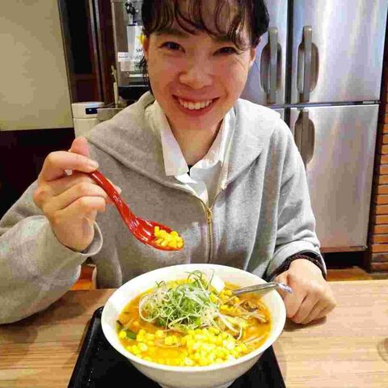

Yuko Kitano
BITS Co., Ltd. · Japan
Bioinformatics engineer and tool developer. Manages a WGS pipeline of about 5,000 human samples a year as a daily Nextflow job. Built an LLM ACMG variant interpreter at MedHackathon Asia in Singapore, now live in the cloud, and a VCF annotation and filtering tool for pre-review analysis — both deployed and ready to try.
Topics: Genomics, Workflows, Variants, Clinical, LLM/AI
Codes in: Python